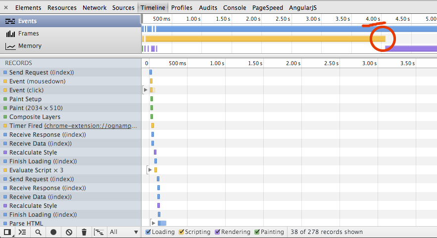
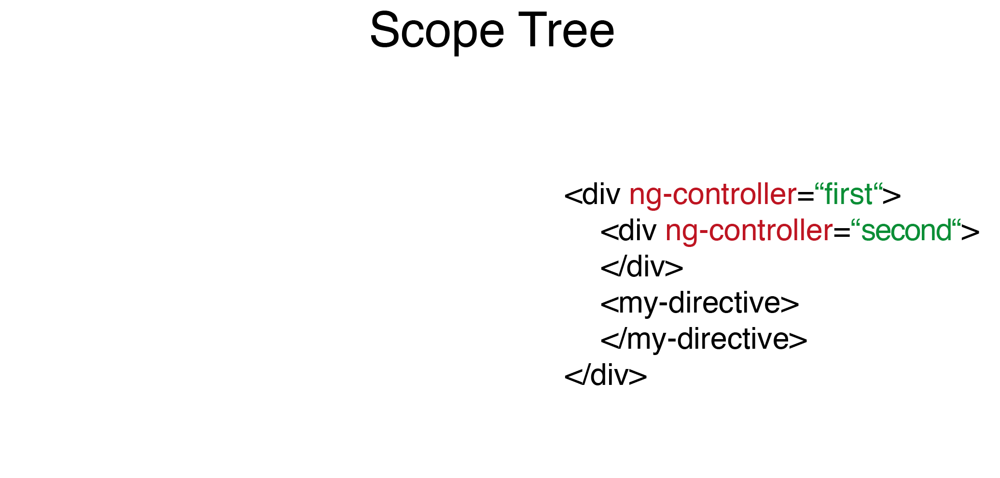
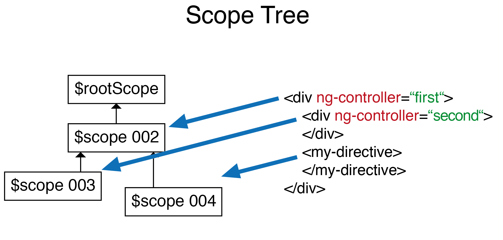
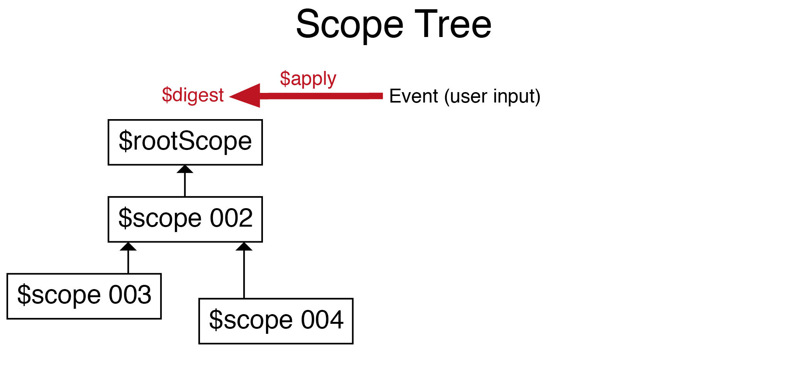
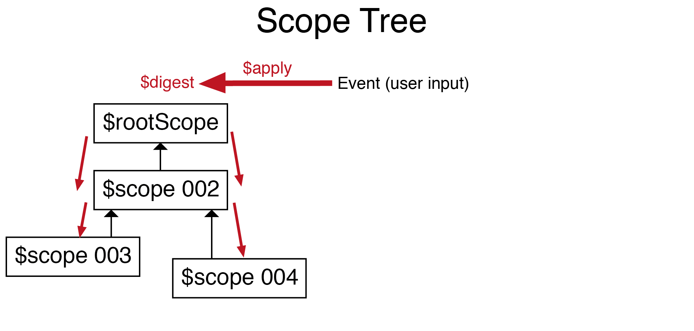

Supercharge AngularJS
Performance Measurement and Tuning

We <3 angular.js
Hello {{name}}!
Hello {{name}}

Behind the AngularJS magic




One:
Address book
Avoid watching invisible elements
limit number of watches, use ng-if instead of ng-show
Two:
Bakery
No complex watch statements
precalculate and cache results, make watches simple and fast
Three:
Numbers
Ensure DOM updates are batched
don't use ng-include in ng-repeat, prefill the template cache
Workflow
“Performance tuning – set expectations, measure, tune, and repeat” – {1}
- Have a problem (no premature optimizations)
- Set time/ budget limits
- Measure correctly
- Find main bottle necks
- Fix bottlenecks one by one
(constantly measure and evaluate new state)
Wrap up
- AngularJS detects model changes by dirty checking. Within the $digest cycle a previous stored value is compared to the actual model value. Process is repeated until models are stable
- One: Don't watch for invisible (ng-if > ng-show)
- Two: Avoid complex watch-expressions
- Three: Ensure DOM updtes are batched
- Workflow: detect problem, set expectations, measure, fix, repeat
* Small Improvements is hiring
visit small-improvements.com/careers
References
- Mastering Web Application Development with AngularJS, Pawel Kozlowski, Peter Bacon Darwin, Packt Publishing, 23. August 2013
- AngularJS Performance Tuning for Long Lists
- Optimizing AngularJS: 1200ms to 35ms
- Analysing Performance of AngularJS Screens
- Misco Hevery on AngularJS performance
- AngularJS: 6 Common Pitfalls Using Scopes
- Bindonce: Zero watches binding for AngularJS